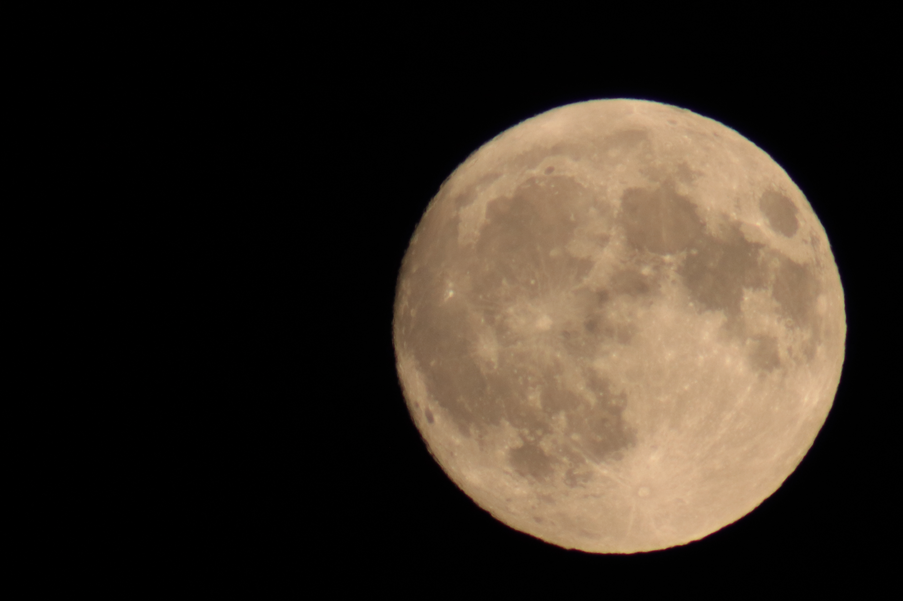

Collection
Landscapes
Mountains, waterfalls, volcanoes, glaciers and remote places.

Collection
Wildlife
Birds, mammals and spontaneous encounters.

Collection
Travel
Road trips, unforgettable places and adventures around the world.

Collection
Macro
Tiny details, textures, shapes and hidden worlds.

Collection
Astrophotography
Stars, galaxies, the Moon and the night sky.